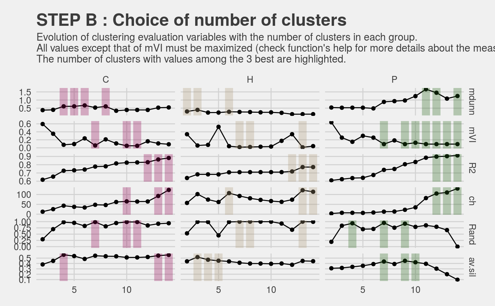
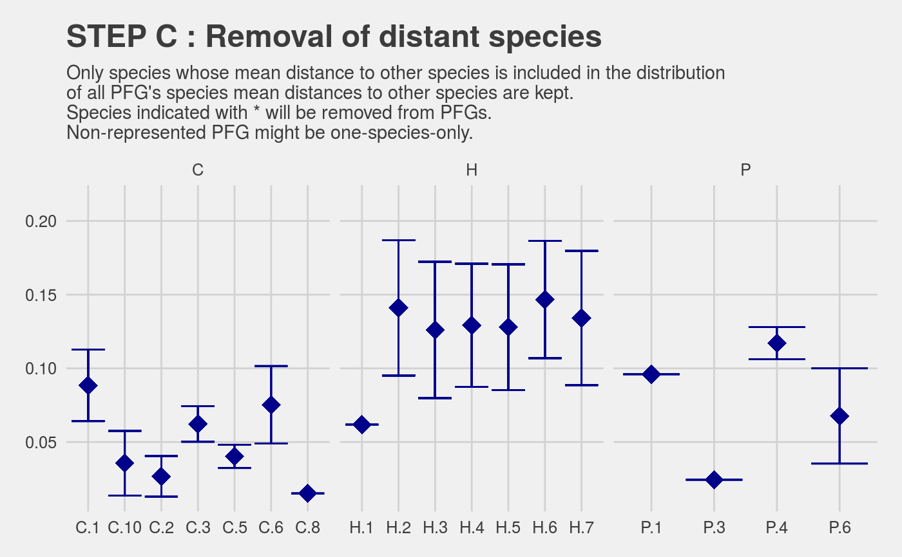

Choose clusters and select determinant species
Source:R/PRE_FATE.speciesClustering_step2.R
This script is designed to obtain functional groups by : 1)
select the number of clusters to be kept from an object obtained with the
PRE_FATE.speciesClustering_step1 function ; 2) refine these groups
by identifying determinant species in each of them.
PRE_FATE.speciesClustering_step2(clust.dendograms, no.clusters, mat.species.DIST)
Arguments
| clust.dendograms | a dendogram or a |
|---|---|
| no.clusters | a |
| mat.species.DIST | a |
Value
A list object with 2 elements :
- determ.sp
a
vectorwith the names of all determinant species- determ.all
a
data.framecontaining all species (determinant and non-determinant) with 10 columns :pfg: the ID of the PFG (group + no.cluster)group: name of sub-datasetno.cluster: cluster numbersp: name of speciesID: species number in each PFGsp.mean.dist: species mean distance to other species of the same PFGallSp.mean: mean(sp.mean.dist) within the PFGallSp.min: mean(sp.mean.dist) - 1.64 * sd(sp.mean.dist) within the PFGallSp.max: mean(sp.mean.dist) + 1.64 * sd(sp.mean.dist) within the PFGtoSuppr: 0 if determinant species, 1 otherwise
Two PRE_FATE_CLUSTERING_[...].pdf files are created :
STEP_2C
distantSpeciesto visualize in each PFG the distribution of mean distance of each species to other species, and non-determinant species which are outside the distribution
STEP_2C
PCOto visualize in each PFG the distribution of species, with and without non-determinant species
Details
This function allows one to obtain a classification of dominant species into Plant Functional Groups (PFG), and the determinant species based on these PFGs.
What is the difference between dominant and
determinant species ?
Dominant species are species representative of an environment or a studied area, in terms of number of releves or abundance values. They can be found with the
PRE_FATE.selectDominantfunction of this package. These dominant species are used to build PFG with thePRE_FATE.speciesClustering_step1function.Once PFG are built, determinant species are defined as refined subsets of dominant species within each PFG. The process is detailed below :
each dominant species is assigned to a PFG
within each PFG :
for each species, compute its mean distance to the other species within the PFG (
sp.mean.dist)calculate the mean value of all these mean distances (
allSp.mean)calculate the deviation values around this mean value (
allSp.minandallSp.max)determinant species are the ones that are included between these deviation values
See also
PRE_FATE.speciesDistance,
PRE_FATE.speciesClustering_step1
Examples
## Load example data data(MontBlanc) ## MontBlanc$mat.traits : data.frame ## MontBlanc$mat.nicheOverlap : niolap object ## Calculate distance between species sp.DIST = PRE_FATE.speciesDistance(mat.species.traits = MontBlanc$mat.traits, mat.species.overlap = MontBlanc$mat.nicheOverlap)#> #> ############## TRAIT INFORMATIONS ############## #> #> Number of species : 335 #> Measured traits : Disp, Light, Height, Palatability #> Groups : C, H, P #> Number of NA values in each group (which have been removed) : 0 4 0 #> Number of species in each group : 48 269 18 #> #> Number of species with traits : 337 #> Number of species with traits and no overlap information : 69 #> Number of species with overlap : 270 #> Number of species with overlap and no traits information : 2 #> #> Comparison of groups' dimensions : #> #> Group 1 : #> Trait distances : 48 48 #> Overlap distances : 38 38 #> #> Group 2 : #> Trait distances : 269 269 #> Overlap distances : 215 215 #> #> Group 3 : #> Trait distances : 18 18 #> Overlap distances : 15 15 #> #> Number of species with both trait and overlap distances: 268str(sp.DIST)#> List of 3 #> $ C:Class 'dist' atomic [1:703] 0.0846 0.2436 0.1439 0.3741 0.038 ... #> .. ..- attr(*, "Labels")= chr [1:38] "X10192" "X11256" "X12051" "X12060" ... #> .. ..- attr(*, "Size")= int 38 #> .. ..- attr(*, "call")= language as.dist.default(m = mat) #> .. ..- attr(*, "Diag")= logi FALSE #> .. ..- attr(*, "Upper")= logi FALSE #> $ H:Class 'dist' atomic [1:23005] 0.232 0.165 0.262 0.273 0.24 ... #> .. ..- attr(*, "Labels")= chr [1:215] "X10053" "X10106" "X10113" "X10182" ... #> .. ..- attr(*, "Size")= int 215 #> .. ..- attr(*, "call")= language as.dist.default(m = mat) #> .. ..- attr(*, "Diag")= logi FALSE #> .. ..- attr(*, "Upper")= logi FALSE #> $ P:Class 'dist' atomic [1:105] 0.382 0.192 0.277 0.252 0.395 ... #> .. ..- attr(*, "Labels")= chr [1:15] "X11313" "X11388" "X11726" "X11729" ... #> .. ..- attr(*, "Size")= int 15 #> .. ..- attr(*, "call")= language as.dist.default(m = mat) #> .. ..- attr(*, "Diag")= logi FALSE #> .. ..- attr(*, "Upper")= logi FALSE## Run hierarchical clustering and number of clusters' selection sp.CLUST = PRE_FATE.speciesClustering_step1(mat.species.DIST = sp.DIST)#> #> ############## CLUSTERING ############## #> #> Clustering method : average #> Clustering evaluation...## 2 .pdf files have been produced str(sp.CLUST)#> List of 2 #> $ clust.dendograms:List of 3 #> ..$ C:List of 7 #> .. ..$ merge : int [1:37, 1:2] -27 -8 -26 -17 -9 -29 -11 -25 -33 -3 ... #> .. ..$ height : num [1:37] 0.00661 0.00672 0.0078 0.01186 0.01203 ... #> .. ..$ order : int [1:38] 7 14 15 16 32 24 33 25 26 27 ... #> .. ..$ labels : chr [1:38] "X10192" "X11256" "X12051" "X12060" ... #> .. ..$ method : chr "average" #> .. ..$ call : language hclust(d = as.dist(x), method = clust.method) #> .. ..$ dist.method: NULL #> .. ..- attr(*, "class")= chr "hclust" #> ..$ H:List of 7 #> .. ..$ merge : int [1:214, 1:2] -5 -17 -188 -131 -160 -58 -169 -52 -82 -106 ... #> .. ..$ height : num [1:214] 0.00529 0.00662 0.0067 0.00718 0.00752 ... #> .. ..$ order : int [1:215] 27 81 129 208 29 166 78 79 95 165 ... #> .. ..$ labels : chr [1:215] "X10053" "X10106" "X10113" "X10182" ... #> .. ..$ method : chr "average" #> .. ..$ call : language hclust(d = as.dist(x), method = clust.method) #> .. ..$ dist.method: NULL #> .. ..- attr(*, "class")= chr "hclust" #> ..$ P:List of 7 #> .. ..$ merge : int [1:14, 1:2] -12 -5 -4 -9 -7 -1 2 -2 6 3 ... #> .. ..$ height : num [1:14] 0.0361 0.045 0.0489 0.0708 0.1343 ... #> .. ..$ order : int [1:15] 14 4 11 1 3 5 15 9 10 2 ... #> .. ..$ labels : chr [1:15] "X11313" "X11388" "X11726" "X11729" ... #> .. ..$ method : chr "average" #> .. ..$ call : language hclust(d = as.dist(x), method = clust.method) #> .. ..$ dist.method: NULL #> .. ..- attr(*, "class")= chr "hclust" #> $ clust.evaluation:'data.frame': 234 obs. of 4 variables: #> ..$ group : Factor w/ 3 levels "C","H","P": 1 1 1 1 1 1 1 1 1 1 ... #> ..$ nb.cluster: int [1:234] 2 3 4 5 6 7 8 9 10 11 ... #> ..$ variable : Factor w/ 6 levels "mdunn","mVI",..: 1 1 1 1 1 1 1 1 1 1 ... #> ..$ value : num [1:234] 0.379 0.399 0.613 0.613 0.67 ...## Select number of clusters and find determinant species sp.DETERM = PRE_FATE.speciesClustering_step2(clust.dendograms = sp.CLUST$clust.dendograms , no.clusters = c(11, 7, 8) , mat.species.DIST = sp.DIST)#> #> ############## DETERMINANT SPECIES ############## #> #> Identification...#> Warning: Removed 260 rows containing missing values (geom_point).#> Warning: Removed 260 rows containing missing values (geom_point).#> Warning: Removed 38 rows containing missing values (geom_point).#> Warning: Removed 215 rows containing missing values (geom_point).#> Warning: Removed 15 rows containing missing values (geom_point).## 2 .pdf files have been produced str(sp.DETERM)#> List of 2 #> $ determ.sp : Factor w/ 260 levels "X10192","X11256",..: 1 2 3 4 5 6 7 9 10 11 ... #> $ determ.all:'data.frame': 260 obs. of 10 variables: #> ..$ pfg : Factor w/ 18 levels "C.1","C.10","C.2",..: 1 1 1 1 1 1 1 1 1 2 ... #> ..$ group : Factor w/ 3 levels "C","H","P": 1 1 1 1 1 1 1 1 1 1 ... #> ..$ no.cluster : Factor w/ 9 levels "1","10","2","3",..: 1 1 1 1 1 1 1 1 1 2 ... #> ..$ sp : Factor w/ 260 levels "X10192","X11256",..: 1 2 3 4 5 6 7 8 9 10 ... #> ..$ ID : int [1:260] 1 2 3 4 5 6 7 8 9 1 ... #> ..$ sp.mean.dist: num [1:260] 0.0803 0.0693 0.0989 0.085 0.0768 ... #> ..$ allSp.mean : num [1:260] 0.0885 0.0885 0.0885 0.0885 0.0885 ... #> ..$ allSp.min : num [1:260] 0.0642 0.0642 0.0642 0.0642 0.0642 ... #> ..$ allSp.max : num [1:260] 0.113 0.113 0.113 0.113 0.113 ... #> ..$ toSuppr : num [1:260] 0 0 0 0 0 0 0 1 0 0 ...